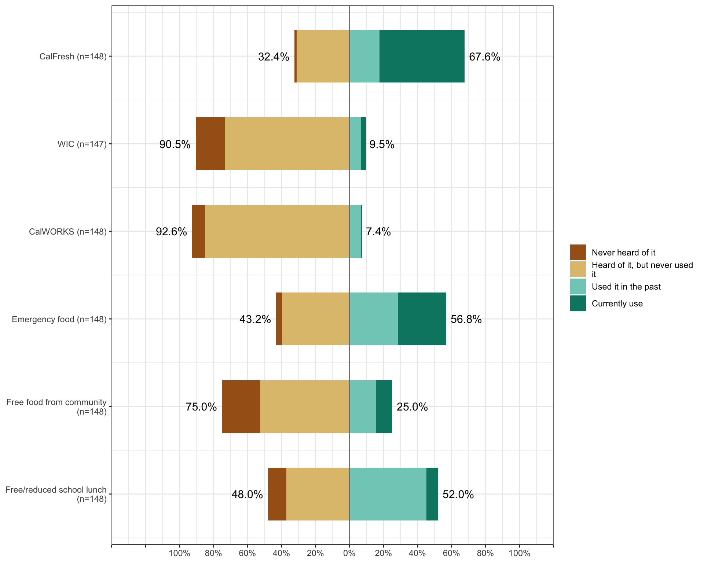

Participation in Basic Needs Programs and Services
Participation in Programs ⭐

CalFresh: Half, or 50.0% (n = 74) of respondents, reported that they currently CalFresh and 17.6% (n = 26) have used it in the past. 31.1% (n = 46) reported they have heard of CalFresh but have never used it and 1.4% (n = 2) have never heard of it.
WIC: Only 2.7% (n = 4) of respondents reported they currently use the WIC nutrition program, 6.8% (n = 10) of respondents reported they have used it in the past, and 17.0% (n = 25) reported they have never heard of it. The majority (n = 108 73.5%) reported that they have heard of it but never have used it.
CalWORKs: Only 0.7% (n = 1) of respondents reported they currently use CalWORKs, 6.8% (n = 10) of respondents reported they have used it in the past, and 7.4% (n = 11) reported they have never heard of it. The majority (n = 126 85.1%) reported that they have heard of it but never have used it.
Emergency Food: Of the students who responded, 28.4% (n = 42) reported that they currently use emergency food from the food bank, food pantry, or church, 28.4% (n = 42) reported they have used emergency food in the past, and 3.4% (n = 5) reported they never heard of it. The majority (n = 59 39.9%) reported they have heard of it but never used it.
Food Pantry: 47.6% (n = 69) of the respondents reported that they utilized the food pantry for 1-2 months in the last year, 7.6% (n = 11) reported that they utilized the pantry more than 8 months in the last year, and 17.2% (n = 25) reported they did not utilize the food pantry because there was no need.
Free Food from community: Only 9.5% (n = 14) of respondents reported that they currently get free food from other community organizations such as meal vouchers, 15.5% (n = 23) reported they have used it in the past, and 22.3% (n = 33) reported they have never heard of it. The majority (n = 78 52.7%) reported that they have heard of it but have never used it.
Free or reduced lunch: Only 6.8% (n = 10) of respondents reported that they currently have free or reduced lunch meals at district schools for their children or dependents, 45.3% (n = 67) reported that they have in the past, and 37.2% (n = 55) reported they have heard of it but have never used it. Only 10.8% (n = 16) reported they have never heard of it.
CalFresh Benefits ⭐

More than 50% of respondents neither agreed or disagreed, or agreed, that they were able to work fewer paid hours (65.1%), had more time for unpaid work (57.6%), had more money for bills (71.4%) and entertainment (59.6%), shopped at the Farmer’s Market more (56.8%), were able to learn more about healthy food (71.8%) and were able to purchase healthy foods (87.3%) while they received CalFresh.
 More than 50% of respondents neither agreed or disagreed, or agreed, that they were able to cook at home more often (94%), consumed a healthier diet (86.8%), consumed less fast food (84.6%), consumed fewer processed foods (85.9%), consumed fewer sweetened drinks (79.4%), and consumed fewer alcoholic beverages (81.4%) while they received CalFresh.
More than 50% of respondents neither agreed or disagreed, or agreed, that they were able to cook at home more often (94%), consumed a healthier diet (86.8%), consumed less fast food (84.6%), consumed fewer processed foods (85.9%), consumed fewer sweetened drinks (79.4%), and consumed fewer alcoholic beverages (81.4%) while they received CalFresh.
 More than 50% of respondents neither agreed or disagreed, or agreed, that while they were receiving CalFresh they were enrolled in more classes (52%), able to concentrate more in classes (94.9%), and their grades improved (96.2%). They had more time to study for exams (93.8%), prepare for class (92.6%), and had more time for homework (92.4%) & office hours (89%). They also reported that they neither disagreed nor agreed, or agreed, that they had more time to attend class (93.6%), for field trips (84.9%), their sleep quality improved (82.3%) and stress level decreased (73.9%) while receiving CalFresh.
More than 50% of respondents neither agreed or disagreed, or agreed, that while they were receiving CalFresh they were enrolled in more classes (52%), able to concentrate more in classes (94.9%), and their grades improved (96.2%). They had more time to study for exams (93.8%), prepare for class (92.6%), and had more time for homework (92.4%) & office hours (89%). They also reported that they neither disagreed nor agreed, or agreed, that they had more time to attend class (93.6%), for field trips (84.9%), their sleep quality improved (82.3%) and stress level decreased (73.9%) while receiving CalFresh.
Barriers to CalFresh ⭐
| n | % | |
|---|---|---|
| Didn’t Think They Were Eligible | 23 | 15.3 |
| Too Long | 13 | 8.7 |
| Could Not Get Verification Document | 10 | 6.7 |
| Other | 8 | 5.3 |
| Too Difficult | 7 | 4.7 |
| No Time To Go To Office | 6 | 4.0 |
| Family Does Not Want To | 6 | 4.0 |
| No Need | 5 | 3.3 |
| Embarrassed | 4 | 2.7 |
| No Transportation | 4 | 2.7 |
| Beliefs | 2 | 1.3 |
| Campus Was Not Helpful | 0 | 0.0 |
This work was supported by insert grant information here. Any use of these results in further work must use the following citation:
Center for Healthy Communities, "Website name", June 2020. Retrieved on xx-xxx-xxxx from https://chicocalfresh.github.io/bns-website/index.html